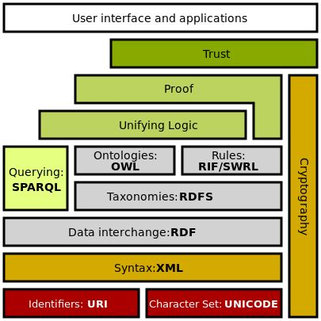

2.8k words in total, 10 minutes required. 图谱实践笔记第一篇：基本概念，主要摘抄自知乎专栏[1]。 语义网络（Semantic Network）上世纪60年代提出的知识表达模式，其用相互连接的节点和边来表示知识。节点表示对象、概念，边表示节点之间的关系。 优缺点：语义网络的优点： 容易理解和展示。 相关概念容易聚类。 语义网络的缺点： 节点和边的值没有标准，完全是由用户自己定义。 多源数据融合比较困难，因为没有标准。 无法区分概念节点和对象节点。 无法对节点和边的标签(label)进行定义。 RDF的提出解决了语义网络的缺点1和缺点2，在节点和边的取值上做了约束，制定了统一标准，为多源数据的融合提供了便利。另外，RDF对is-a关系进行了定义，即，rdf:type。 在语义网技术栈中，RDFS和OWL是RDF更上一层的技术，主要是为了解决语义网络的缺点3和缺点4，其提供了schema层的描述。参见以下“语义网技术栈”。 语义网（Semantic Web）和链接数据（Linked Data）相对于语义网络，语义网和链接数据倾向于描述万维网中资源、数据之间的关系。其实，本质上，语义网、链接数据还有Web 3.0都是同一个概念，只是在不同的时间节点和环境中，它们各自描述的角度不同。它们都是指W3C制定的用于描述和关联万维网数据的一系列技术标准，即，语义网技术栈。 语义网是一个更官方的名称，也是该领域学者使用得最多的一个术语，同时，也用于指代其相关的技术标准。 链接数据起初是用于定义如何利用语义网技术在网上发布数据，其强调在不同的数据集间创建链接。对应到语义网技术栈，它倾向于使用RDF和SPARQL（RDF查询语言）技术，对于Schema层的技术，RDFS或者OWL，则很少使用。 知识图谱（Knowledge Graph）知识图谱是由一些相互连接的实体和他们的属性构成的。换句话说，知识图谱是由一条条知识组成，每条知识表示为一个SPO三元组(Subject-Predicate-Object)。 在知识图谱中，我们用RDF形式化地表示这种三元关系。RDF(Resource Description Framework)，即资源描述框架，是W3C制定的，用于描述实体/资源的标准数据模型。RDF图中一共有三种类型，International Resource Identifiers(IRIs)，blank nodes 和 literals。 IRI我们可以看做是URI或者URL的泛化和推广，它在整个网络或者图中唯一定义了一个实体/资源，和我们的身份证号类似。 literal是字面量，我们可以把它看做是带有数据类型的纯文本。 blank node简单来说就是没有IRI和literal的资源，或者说匿名资源。可以用带有IRI的node来充当blank node，行使其功能，有点类似freebase中CVT(compound value type)的概念。 SPO每个部分的类型约束： Subject可以是IRI或blank node。 Predicate是IRI。 Object三种类型都可以。 在上述语义网和链接数据的基础上，可以理解为：知识图谱是由本体（Ontology）作为Schema层，和RDF数据模型兼容的结构化数据集。 链接数据和知识图谱最大的区别在于： 链接数据更强调不同RDF数据集（知识图谱）的相互链接。 知识图谱不一定要链接到外部的知识图谱，更强调有一个本体层来定义实体的类型和实体之间的关系。另外，知识图谱数据质量要求比较高且容易访问，能够提供面向终端用户的信息服务（查询、问答等等）。 语义网技术栈RDF，RDFS/OWL属于语义网技术栈，它们的提出，使得语义网克服了语义网络的缺点，如下图所示： Semantic Web Stack RDFRDF(Resource Description Framework)，即资源描述框架，其本质是一个数据模型（Data Model）。它提供了一个统一的标准，用于描述实体/资源。简单来说，就是表示事物的一种方法和手段。RDF形式上表示为SPO三元组，有时候也称为一条语句（statement）。 目前，RDF序列化的方式主要有：RDF/XML，N-Triples，Turtle，RDFa，JSON-LD等几种。 RDF/XML，顾名思义，就是用XML的格式来表示RDF数据。然而，对于RDF来说，XML的格式太冗长，也不便于阅读。 N-Triples，即用多个三元组来表示RDF数据集，是最直观的表示方法。在文件中，每一行表示一个三元组，方便机器解析和处理。开放领域知识图谱DBpedia通常是用这种格式来发布数据的。 Turtle, 应该是使用得最多的一种RDF序列化方式了。它比RDF/XML紧凑，且可读性比N-Triples好。 RDFa, 即“The Resource Description Framework in Attributes”，是HTML5的一个扩展，在不改变任何显示效果的情况下，让网站构建者能够在页面中标记实体，像人物、地点、时间、评论等等。也就是说，将RDF数据嵌入到网页中，搜索引擎能够更好的解析非结构化页面，获取一些有用的结构化信息，一个示例页面https://rdfa.info/play/。 JSON-LD，即“JSON for Linking Data”，用键值对的方式来存储RDF数据。 RDF的表达能力有限，无法区分类和对象，也无法定义和描述类的关系/属性。RDF是对具体事物的描述，缺乏抽象能力，无法对同一类别的事物进行定义和描述，需要schema的引入。RDFS和OWL这两种技术或者说模式语言/本体语言（schema/ontology language）解决了RDF表达能力有限的困境。 RDFS/OWLRDFS/OWL本质上是一些预定义词汇（vocabulary）构成的集合，用于对RDF进行类似的类定义及其属性的定义。类似于关系型数据库中构建好schema来定义数据的通用关系。 RDFS/OWL序列化方式和RDF没什么不同，表现形式上它们就是RDF。其常用的方式主要是RDF/XML，Turtle。另外，通常我们用小写开头的单词或词组来表示属性，大写开头的表示类。数据属性（data property，实体和literal字面量的关系）通常由名词组成，而对象数据（object property，实体和实体之间的关系）通常由动词（has，is之类的）加名词组成。剩下的部分符合驼峰命名法。 举例而言，我们可以定义一个关系name，并用RDFS来描述name描述的是一个人和一个string的literal之间的抽象关系。RDFS几个比较重要常用的词汇： rdfs:Class. 用于定义类。 rdfs:domain. 用于表示该属性属于哪个类别。 rdfs:range. 用于描述该属性的取值类型。 rdfs:subClassOf. 用于描述该类的父类。比如，我们可以定义一个运动员类，声明该类是人的子类。 rdfs:subProperty. 用于描述该属性的父属性。比如，我们可以定义一个名称属性，声明中文名称和全名是名称的子类。 其实rdf:Property和rdf:type也是RDFS的词汇，因为RDFS本质上就是RDF词汇的一个扩展。 RDFS核心类包括： rdfs:Resource，所有资源的类 rdfs:Class，所有类的类 rdfs:Literal，所有文字(字符串)的类。 rdf:Property，所有属性的类。 rdf:Statement，所有具体化声明的类。 用来定义联系的RDFS核心属性包括： rdf:type，将一个资源关联到它的类。该资源被声明为该类的一个实例。 rdfs:subClassOf，将一个类关联到它的超类。一个类的所有实例都是它的超类的实例。注意，一个类可能是多个类的子类。 rdfs:subPropertyOf，将一个属性关联到它超属性中的一个。 需要注意的是，rdfs:subPropertyOf 和 rdfs:subClassOf 被定义为传递的。rdfs:Class 是 rdfs:Resource 的一个子类(所有的类都是资源)，同时 rdfs:Resource 是 rdfs:Class 的一个实例。出于同样的原因，每个类都是 rdfs:Class 的实例。 用来限制属性的RDFS核心属性包括： rdfs:domain，指定一个属性P的定义域，声明任何拥有某个给定属性的资源是定义域类的一个实例。 rdfs:range，指定一个属性P的值域，声明一个属性的取值是值域类的实例。 RDFS还允许用一个标准的方式表达容器。可以表达包、序列或选择。 rdf:Bag，包的类 rdf:Seq，序列的类。 rdf:Alt，选择的类。 rdfs:Container，所有容器类的超类，包括前面提到的3种。 RDFS效用属性，一个资源可以在万维网上的许多地方被定义和描述。下列属性允许我们定义连接到这些地址： rdfs:seeAlso，将一个资源关联到另一个解释它的资源。 rdfs:isDefinedBy，它是rdfs:seeAlso 的一个子属性，将一个资源关联到它的定义之处，一般是一个RDF模式。 rdfs:comment，注释，一般是长的文本，可以与一个资源关联。 rdfs:label，讲一个人类友好的标签(名字)与一个资源相关联。 OWL，即“Web Ontology Language”，可以当做是RDFS的一个扩展，其添加了额外的预定义词汇。 描述属性特征的词汇： owl:TransitiveProperty. 表示该属性具有传递性质。例如，我们定义“位于”是具有传递性的属性，若A位于B，B位于C，那么A肯定位于C。 owl:SymmetricProperty. 表示该属性具有对称性。例如，我们定义“认识”是具有对称性的属性，若A认识B，那么B肯定认识A。 owl:FunctionalProperty. 表示该属性取值的唯一性。 例如，我们定义“母亲”是具有唯一性的属性，若A的母亲是B，在其他地方我们得知A的母亲是C，那么B和C指的是同一个人。 owl:inverseOf. 定义某个属性的相反关系。例如，定义“父母”的相反关系是“子女”，若A是B的父母，那么B肯定是A的子女。 本体映射词汇（Ontology Mapping） owl:equivalentClass. 表示某个类和另一个类是相同的。 owl:equivalentProperty. 表示某个属性和另一个属性是相同的。 owl:sameAs. 表示两个实体是同一个实体。 本体映射主要用在融合多个独立的Ontology（Schema）。举个例子，张三自己构建了一个本体结构，其中定义了Person这样一个类来表示人；李四则在自己构建的本体中定义Human这个类来表示人。当我们融合这两个本体的时候，就可以用到OWL的本体映射词汇。 OWL具有基于本体的推理能力，比如定义hasParent和hasChild互为owl:inverseOf，则可以大规模补全数据。 扩展阅读1.https://zhuanlan.zhihu.com/p/31864048. ↩2.https://www.cambridgesemantics.com/blog/semantic-university/intro-semantic-web/many-names-semantic-web/. ↩3.http://pelhans.com/2018/03/15/xiaoxiangkg-note1/. ↩ ← Previous Post Next Post→ Table of Contents 语义网络（Semantic Network）优缺点：语义网（Semantic Web）和链接数据（Linked Data）知识图谱（Knowledge Graph）语义网技术栈RDFRDFS/OWL扩展阅读